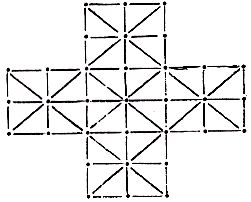

Nascom Journal |
3/81 |
in folgende richtungen darf gezogen werden:
Wer den Reaktionstest 2 aus dem Journal 5/80 durchspielen möchte, wundert sich über das seltsame Verhalten des Computers; denn ins Listing haben sich zwei Fehler eingeschlichen, die unter anderem einen Sprung ins Nirgendwo ergeben. Zudem sind einige Stellen unleserlich gedruckt. Hier nun die Fehler:
0CF4 statt CD A2 0D muss stehen CD 62 0D
0CA1 statt CD DC 0C muss stehen C3 DC 0C
Völlig unleserlich waren die Adressen 0D51 und 0D75, in die 7B bzw. 05 eingetragen werden muss.
Wer das Spiel noch etwas lebendiger gestalten will, kann durch folgende kleine Änderung noch eine Geräuschroutine einfügen:
0CE6 statt CD 0D 06 → CD 9D 0D
0D9D 3E 04 D3 00 CD 06 0D C9
Der Ton kann, wie schon öfters beschrieben, an SK 1 Pin 13 abgenommen werden.
In der abgedruckten Fassung druckt der Computer ein ▯Zeichen, wenn er einen Befehl nicht erkennt. Er fährt dann fort, den nächsten Code zu interpretieren. Da er nicht weiss, wie lang der unbekannte Befehl ist, werden z.T. längere Teile des Programms falsch interpretiert.
Folgende Veränderungen lassen ihn an den entsprechenden Stellen anhalten, so dass man den unbekannten Befehl per Hand eintippen kann.Dann gibt man einfach A und den nächsten gültigen Befehl (d.h. die nächste Adresse!) ein, und der Computer übersetzt wie zuvor. Die am Anfang eingegebene Endadresse bleibt dabei erhalten.
0478 3D CA E3 07 06DB 00 00 24 8F
| Seite 11 von 24 |
|---|